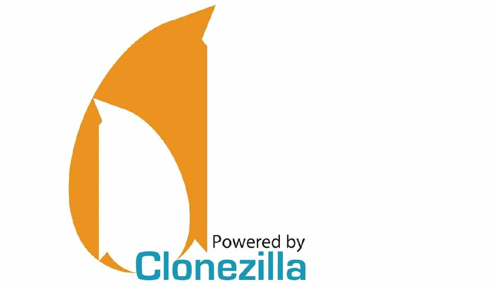

Clonezilla
¿Qué es Clonezilla?
Clonezilla es un software libre de recuperación ante desastres que sirve para la clonación de discos y particiones.
Se caracteriza por tener un bajo consumo de recursos para funcionar en modo Live así como un soporte para cualquier tipo de particiones y de discos duros
Puede ser descargada de manera gratuita desde su página web oficial
Creación de pendrive con Clonezilla
Para generar un pendrive de arranque de clonezilla nos dirigiremos a la página web oficial de rufu ( o cualquiero otra utilidad que nos permita formatear y crear soportes USB de arranque) donde nos descargaremos el ejecutable o su version portatil

Ejecutaremos el rufus y seleccionaremos la imagen de clonezilla para general el pendrive de arranque.
Le daremos a empezar y esperaremos a que finalice el procesador.
Requisitos para ejecutar clonezilla en un ordenador:
- Un procesador x86 o x86-64
- Al menos 196 MB de memoria RAM
- Dispositivo de arranque, por ejemplo, unidad de CD / DVD, puerto USB, PXE o disco duro.